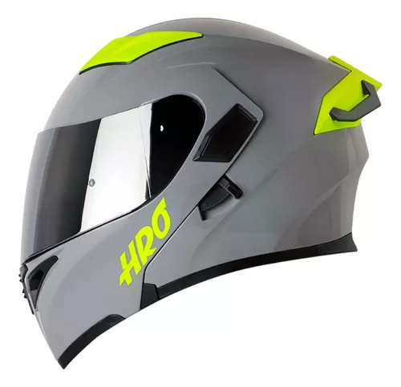

Carcasa fabricada en fibra de vidrio multiaxial.
2 tamaños de calota para un ajuste morfológico óptimo.
Correa de anilla doble D EPS de densidad múltiple.
"Sistema de extracción de emergencia de tiburón" para permitir la liberación rápida del interior del casco en caso de emergencia.
Acabado
Fibras de carbono y fibra de vidrio multiaxial.
Fibra de vidrio multiaxial.
Visera
visera con clasificación óptica de clase 1 con espesores variables y un tratamiento antirrayas.
Pinlock Max Vision® incluido en la caja.
Nuevo sistema de bloqueo de visera ergonómico, completo con una posición de flujo de aire.
Movimiento de muesca de visera “ultra suave”.
Visera con etiqueta UV380 tratada para resistir arañazos.
Sistema de liberación rápida de visera.
Interior
Tejido de forro ALVEOTECH con etiqueta SANITIZED® con propiedades antimicrobianas.
Interior extraíble apto para lavado a máquina (30 ° C máx.).
Mejillas "3D morpho".
Sistema "EasyFit"
Comodidad óptima para ciclistas con gafas.
Protector de aliento antivaho de "doble uso".
Máscara antivaho.
Ranura reservada para el interco Sharktooth®.
Aerodinámica y ventilación
2 entradas de aire.
2 extractores de aire con interruptor de posición ON / OFF.
Aerodinámica optimizada mediante estudios de diseño CFD (Computational Fluid Dynamics).
Cierres laterales de pico de Forma aerodinámica “SHARK Skin” que favorecen la atenuación pasiva del ruido.
Precio:$14,835MX-$825.34US
Casco:Casco Abatible Kov Batman Dc Comics Con Led Certificado Dot(Gama Baja)

Informacion Sobre El Casco
VISOR CON TECNOLOGÍA ANTISCRATCH
La característica antiscratch ayuda a prevenir los rayones en el visor de tu casco, permitiendo así mantener una gran visibilidad
Visor color transparente
ACOLCHADO ERGONÓMICO Y DESPRENDIBLE PARA UNA FÁCIL LIMPIEZA
El acolchonado ergonómico de los cascos HRO se adapta fácilmente a la forma de tu cara, de esta manera sentirás siempre la comodidad de rodar.
El tapizado de los cascos HRO pueden ser removídos con facilidad para que puedas limpiarlos con tranquilidad
TELA INTERNA ANTIALERGÉNICA E HIPOALERGÉNICA
La tecnología de nuestras telas evita y previene las posibles alergias que pueda causarte el roce del acolchonado con tu cara
PINTURA CON EXCELENTE ACABADO EVITA EL DESGASTE DE LOS GRÁFICOS
La pintura de gran calidad de los casco HRO evita que se deteriore fácilmente, manteniendo asi los colores y gráficos como nuevos
CUMPLE CON LAS NORMAS NTC 4533 Y DOT
Todos los cascos HRO cuentan con doble certificación para brindarte la mejor protección, cumpliendo las normas DOT estadunidense y NTC 4533 colombiana
DISEÑO AERODINÁMICO TIPO RACING
El diseño tipo Racing de las corazas HRO permite un desempeño mas aerodinámico, ideal para el uso diario y en carretera
INNOVACIÓN PERIÓDICA DE LAS COLECCIONES
HRO está innovando constantemente, ofreciéndote un amplio catálogo de productos para que elijas el que más se ajuste a tu personalidad